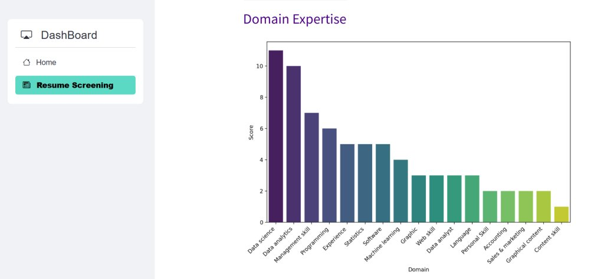

Case study 1 · B.Tech capstone · Team of 3 · 2025
A resume screening tool recruiters could read at a glance
Problem
Recruiters screen hundreds of resumes by hand, and that is where inconsistency and bias creep in. We built a tool that scores a resume against job domains so a recruiter sees the evidence behind a recommendation, not just a yes or no.
What I worked on
- The Streamlit interface: a two-item sidebar (Home, Resume Screening), a drag-and-drop PDF upload, per-domain score bars, a domain expertise chart and a final status message.
- The scoring engine behind it, trained on 400 labeled resumes. We compared five models; XGBoost performed best with 92% accuracy and a 0.93 F1-score.
- Written test cases for the three situations a recruiter meets: a strong match (scored 87%), an unrelated resume (24%) and a mixed one (72%), plus an error state for files that are not resumes.





What I would change now
- Accessibility: the score bars rely on length and colour alone. I would add the number next to each bar and check the bar colour against the background for contrast.
- Consistency: section headings switch between purple, red and green. One heading style and colour set aside for status (success, warning) would read more calmly.
- Clear errors: an invalid file shows the same message as a weak resume. It should say the file could not be read and ask for a PDF resume.
- Plain language: "Suggest To Recruit as Data Scientist" overstates what a score can tell you. "Strong match for Data Scientist" leaves the decision with the recruiter, which was the point of reducing bias.
Case study 2 · Learning project · 2026
A mini component kit where looks change and behaviour does not
Problem
At Lenovo I built reusable UI components in React and Vue. A shared component only stays shared if teams can restyle it without copying it; once a team copies a component to change its look, its behaviour starts to drift. I wanted to practise the alternative: keep behaviour in the component and move every visual choice into tokens a team can change.
Decisions
- Variant, property or override? Variant changes meaning (primary, secondary, ghost). Property changes fit (size). Brand colour and corner radius are tokens, so changing them can never break focus, disabled or loading behaviour.
- States are designed, not left to the browser: hover, keyboard focus, disabled, loading and, for inputs, error.
- Disabled buttons stay focusable with
aria-disabled, so a keyboard user can still reach them and hear why they are unavailable. - The switch is a real switch: a button with
role="switch"andaria-checked, operable with Space and Enter.
Try it
Change the brand and radius tokens. Then press Tab to move through the components: focus, disabled and loading behave the same in every theme.
Button · variants × sizes
Button · states
Text input · states
Switch
Tokens in use
| Token | Value | Used for |
|---|---|---|
--k-brand | #2346d6 | Primary fill, secondary text and border, switch on |
--k-radius | 8px | Buttons and inputs |
--k-danger | #b42318 | Error border and message (paired with text, never colour alone) |
--k-focus | #2346d6 | 3px focus ring on every interactive component |
What I learned
The pale lilac option is there on purpose. It shows why a customization tool has to check tokens: white text on that colour fails WCAG contrast, so a team could break accessibility without touching any code. Next I would rebuild these components in Figma with variants and variables named to match the tokens, so design and code use the same words.
Case study 3 · Personal projects · 2026
Documentation people can use without asking me
Problem
A component, an API or a report is only reusable if someone else can understand it alone. In two projects I treated the documentation as part of the product.
- Payroll API: every endpoint is described in Swagger/OpenAPI, so a developer can read the parameters and try a request in the browser. When a required field is missing, the page says which one. 16 xUnit tests cover the pay rules.
- Optical test report: the pipeline produces an HTML report that leads with four summary numbers, then states in one sentence what was cleaned and why, then shows the detail. 18 pytest tests keep it honest.


What I would change now
The report's statistics table uses raw column names like p05 and p95. For readers outside engineering I would label them "5th percentile" and "95th percentile", the same way a design system's docs should use the words its users use.